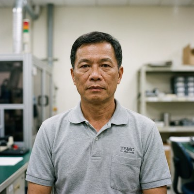
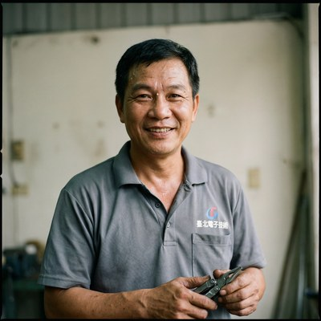
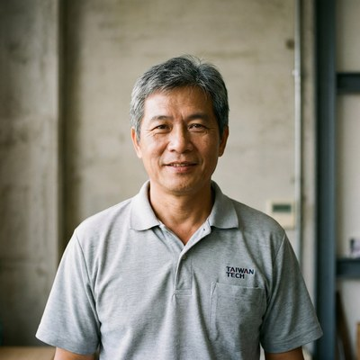
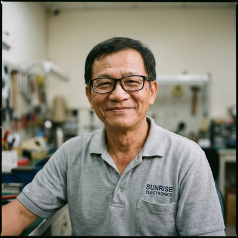
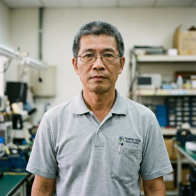
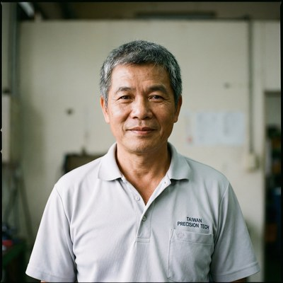

合作工班
認識我們的師傅
以下為示意資料，實際合作師傅以 LINE 媒合時確認為準

王師傅
資深結構漏水診斷
★★★★★ 5.0（12件）
專長工法
熱像儀診斷複雜老屋色素測試
從事防水抓漏近 30 年，擅長以熱像儀診斷複雜滲水路徑，對 30 年以上老公寓有豐富處理經驗。溝通有耐心，習慣用簡單的話說明問題。
🗓 28年資歷📍 大台北地區
📲 透過 LINE 預約 王師傅

陳師傅
科技抓漏・內視鏡定位
★★★★☆ 4.9（18件）
專長工法
內視鏡定位管路探測排水管
專精以高解析內視鏡深入排水管探查，精確定位破裂點，避免打牆盲目施工。特別擅長辦公室與商辦空間的管路問題。
🗓 15年資歷📍 台北新北基隆
📲 透過 LINE 預約 陳師傅

林師傅
高壓灌注止漏・防水塗料
★★★★☆ 4.8（24件）
專長工法
高壓灌注防水塗料窗框嵌縫
擅長高壓灌注打針止漏，對窗框嵌縫老化、外牆裂縫等輕中度漏水案件有豐富處理經驗，施工速度快，報價清楚。
🗓 12年資歷📍 台北新北桃園
📲 透過 LINE 預約 林師傅

張師傅
頂樓防水・外牆修復
★★★★☆ 4.9（15件）
專長工法
頂樓防水PU防水膜透天厝
主攻頂樓防水層重做及外牆防水翻新，對透天厝的頂樓積水、鐵皮接縫等問題特別有心得，施工細心，提供完整前後記錄。
🗓 18年資歷📍 桃園新竹台中
📲 透過 LINE 預約 張師傅

黃師傅
浴室重做・壁癌處理
★★★★☆ 4.8（20件）

吳師傅
全工法・緊急到場
★★★★★ 5.0（8件）

劉師傅
地下室・車庫防水
★★★★☆ 4.7（11件）

蔡師傅
高空作業・外牆防水
★★★★☆ 4.9（9件）

許師傅
鐵皮屋・頂樓加蓋
★★★★☆ 4.6（7件）

鄭師傅
管路換新・老屋翻修
★★★★☆ 4.8（14件）

洪師傅
浴室防水・陽台止漏
★★★★☆ 4.7（10件）

游師傅
外牆壁癌・結構補強
★★★★☆ 4.9（13件）

廖師傅
頂樓九宮格測試
★★★★☆ 4.8（16件）
邱師傅
冷氣排水・管道間
★★★★☆ 4.6（6件）

施師傅
窗框嵌縫・高壓打針
★★★★☆ 4.7（8件）

柯師傅
老屋整體評估
★★★★★ 5.0（5件）

韓師傅
南部防水・透天厝
★★★★☆ 4.8（11件）
唐師傅
水費異常・暗管定位
★★★★☆ 4.7（9件）
方師傅
東部・花蓮台東
★★★★☆ 4.8（7件）
潘師傅
中部老屋・壁癌
★★★★☆ 4.9（15件）